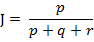

在做分类时常常需要估算不同样本之间的相似性度量(Similarity Measurement)，这时通常采用的方法就是计算样本间的“距离”(Distance)。采用什么样的方法计算距离是很讲究，甚至关系到分类的正确与否。
本文的目的就是对常用的相似性度量作一个总结。
本文目录：
1. 欧氏距离
2. 曼哈顿距离
3. 切比雪夫距离
4. 闵可夫斯基距离
5. 标准化欧氏距离
6. 马氏距离
7. 夹角余弦
8. 汉明距离
9. 杰卡德距离 & 杰卡德相似系数
10. 相关系数 & 相关距离
11. 信息熵
1. 欧氏距离(Euclidean Distance)
欧氏距离是最易于理解的一种距离计算方法，源自欧氏空间中两点间的距离公式。
(1)二维平面上两点a(x1,y1)与b(x2,y2)间的欧氏距离：

(2)三维空间两点a(x1,y1,z1)与b(x2,y2,z2)间的欧氏距离：

(3)两个n维向量a(x11,x12,…,x1n)与 b(x21,x22,…,x2n)间的欧氏距离：

也可以用表示成向量运算的形式：

(4)Matlab计算欧氏距离
Matlab计算距离主要使用pdist函数。若X是一个M×N的矩阵，则pdist(X)将X矩阵M行的每一行作为一个N维向量，然后计算这M个向量两两间的距离。
例子：计算向量(0,0)、(1,0)、(0,2)两两间的欧式距离
X = [0 0 ; 1 0 ; 0 2]
D = pdist(X,'euclidean')
结果：
D =
1.0000 2.0000 2.2361
2. 曼哈顿距离(Manhattan Distance)
从名字就可以猜出这种距离的计算方法了。想象你在曼哈顿要从一个十字路口开车到另外一个十字路口，驾驶距离是两点间的直线距离吗？显然不是，除非你能穿越大楼。实际驾驶距离就是这个“曼哈顿距离”。而这也是曼哈顿距离名称的来源， 曼哈顿距离也称为城市街区距离(City Block distance)。
(1)二维平面两点a(x1,y1)与b(x2,y2)间的曼哈顿距离

(2)两个n维向量a(x11,x12,…,x1n)与 b(x21,x22,…,x2n)间的曼哈顿距离

(3) Matlab计算曼哈顿距离
例子：计算向量(0,0)、(1,0)、(0,2)两两间的曼哈顿距离
X = [0 0 ; 1 0 ; 0 2]
D = pdist(X, 'cityblock')
结果：
D =
1 2 3
3. 切比雪夫距离 ( Chebyshev Distance )
国际象棋玩过么？国王走一步能够移动到相邻的8个方格中的任意一个。那么国王从格子(x1,y1)走到格子(x2,y2)最少需要多少步？自己走走试试。你会发现最少步数总是max( | x2-x1 | , | y2-y1 | ) 步 。有一种类似的一种距离度量方法叫切比雪夫距离。
(1)二维平面两点a(x1,y1)与b(x2,y2)间的切比雪夫距离

(2)两个n维向量a(x11,x12,…,x1n)与 b(x21,x22,…,x2n)间的切比雪夫距离

这个公式的另一种等价形式是

看不出两个公式是等价的？提示一下：试试用放缩法和夹逼法则来证明。
(3)Matlab计算切比雪夫距离
例子：计算向量(0,0)、(1,0)、(0,2)两两间的切比雪夫距离
X = [0 0 ; 1 0 ; 0 2]
D = pdist(X, 'chebychev')
结果：
D =
1 2 2
4. 闵可夫斯基距离(Minkowski Distance)
闵氏距离不是一种距离，而是一组距离的定义。
(1) 闵氏距离的定义
两个n维变量a(x11,x12,…,x1n)与 b(x21,x22,…,x2n)间的闵可夫斯基距离定义为：

其中p是一个变参数。
当p=1时，就是曼哈顿距离
当p=2时，就是欧氏距离
当p→∞时，就是切比雪夫距离
根据变参数的不同，闵氏距离可以表示一类的距离。
(2)闵氏距离的缺点
闵氏距离，包括曼哈顿距离、欧氏距离和切比雪夫距离都存在明显的缺点。
举个例子：二维样本(身高,体重)，其中身高范围是150~190，体重范围是50~60，有三个样本：a(180,50)，b(190,50)，c(180,60)。那么a与b之间的闵氏距离（无论是曼哈顿距离、欧氏距离或切比雪夫距离）等于a与c之间的闵氏距离，但是身高的10cm真的等价于体重的10kg么？因此用闵氏距离来衡量这些样本间的相似度很有问题。
简单说来，闵氏距离的缺点主要有两个：(1)将各个分量的量纲(scale)，也就是“单位”当作相同的看待了。(2)没有考虑各个分量的分布（期望，方差等)可能是不同的。
(3)Matlab计算闵氏距离
例子：计算向量(0,0)、(1,0)、(0,2)两两间的闵氏距离（以变参数为2的欧氏距离为例）
X = [0 0 ; 1 0 ; 0 2]
D = pdist(X,'minkowski',2)
结果：
D =
1.0000 2.0000 2.2361
5. 标准化欧氏距离 (Standardized Euclidean distance )
(1)标准欧氏距离的定义
标准化欧氏距离是针对简单欧氏距离的缺点而作的一种改进方案。标准欧氏距离的思路：既然数据各维分量的分布不一样，好吧！那我先将各个分量都“标准化”到均值、方差相等吧。均值和方差标准化到多少呢？这里先复习点统计学知识吧，假设样本集X的均值(mean)为m，标准差(standard deviation)为s，那么X的“标准化变量”表示为：
而且标准化变量的数学期望为0，方差为1。因此样本集的标准化过程(standardization)用公式描述就是：

标准化后的值 = ( 标准化前的值 － 分量的均值 ) /分量的标准差
经过简单的推导就可以得到两个n维向量a(x11,x12,…,x1n)与 b(x21,x22,…,x2n)间的标准化欧氏距离的公式：

如果将方差的倒数看成是一个权重，这个公式可以看成是一种加权欧氏距离(Weighted Euclidean distance)。
(2)Matlab计算标准化欧氏距离
例子：计算向量(0,0)、(1,0)、(0,2)两两间的标准化欧氏距离 (假设两个分量的标准差分别为0.5和1)
X = [0 0 ; 1 0 ; 0 2]
D = pdist(X, 'seuclidean',[0.5,1])
结果：
D =
2.0000 2.0000 2.8284
6. 马氏距离(Mahalanobis Distance)
（1）马氏距离定义
有M个样本向量X1~Xm，协方差矩阵记为S，均值记为向量μ，则其中样本向量X到u的马氏距离表示为：

而其中向量Xi与Xj之间的马氏距离定义为：

若协方差矩阵是单位矩阵（各个样本向量之间独立同分布）,则公式就成了：

也就是欧氏距离了。
若协方差矩阵是对角矩阵，公式变成了标准化欧氏距离。
(2)马氏距离的优缺点：量纲无关，排除变量之间的相关性的干扰。
(3) Matlab计算(1 2)，( 1 3)，( 2 2)，( 3 1)两两之间的马氏距离
X = [1 2; 1 3; 2 2; 3 1]
Y = pdist(X,'mahalanobis')
结果：
Y =
2.3452 2.0000 2.3452 1.2247 2.4495 1.2247
7. 夹角余弦(Cosine)
有没有搞错，又不是学几何，怎么扯到夹角余弦了？各位看官稍安勿躁。几何中夹角余弦可用来衡量两个向量方向的差异，机器学习中借用这一概念来衡量样本向量之间的差异。
(1)在二维空间中向量A(x1,y1)与向量B(x2,y2)的夹角余弦公式：

(2) 两个n维样本点a(x11,x12,…,x1n)和b(x21,x22,…,x2n)的夹角余弦
类似的，对于两个n维样本点a(x11,x12,…,x1n)和b(x21,x22,…,x2n)，可以使用类似于夹角余弦的概念来衡量它们间的相似程度。

即：

夹角余弦取值范围为[-1,1]。夹角余弦越大表示两个向量的夹角越小，夹角余弦越小表示两向量的夹角越大。当两个向量的方向重合时夹角余弦取最大值1，当两个向量的方向完全相反夹角余弦取最小值-1。
夹角余弦的具体应用可以参阅参考文献[1]。
(3)Matlab计算夹角余弦
例子：计算(1,0)、( 1,1.732)、( -1,0)两两间的夹角余弦
X = [1 0 ; 1 1.732 ; -1 0]
D = 1- pdist(X, 'cosine') % Matlab中的pdist(X, 'cosine')得到的是1减夹角余弦的值
结果：
D =
0.5000 -1.0000 -0.5000
8. 汉明距离(Hamming distance)
(1)汉明距离的定义
两个等长字符串s1与s2之间的汉明距离定义为将其中一个变为另外一个所需要作的最小替换次数。例如字符串“1111”与“1001”之间的汉明距离为2。
应用：信息编码（为了增强容错性，应使得编码间的最小汉明距离尽可能大）。
(2)Matlab计算汉明距离
Matlab中2个向量之间的汉明距离的定义为2个向量不同的分量所占的百分比。
例子：计算向量(0,0)、(1,0)、(0,2)两两间的汉明距离
X = [0 0 ; 1 0 ; 0 2];
D = PDIST(X, 'hamming')
结果：
D =
0.5000 0.5000 1.0000
9. 杰卡德相似系数(Jaccard similarity coefficient)
(1) 杰卡德相似系数
两个集合A和B的交集元素在A，B的并集中所占的比例，称为两个集合的杰卡德相似系数，用符号J(A,B)表示。

杰卡德相似系数是衡量两个集合的相似度一种指标。
(2) 杰卡德距离
与杰卡德相似系数相反的概念是杰卡德距离(Jaccard distance)。杰卡德距离可用如下公式表示：

杰卡德距离用两个集合中不同元素占所有元素的比例来衡量两个集合的区分度。
(3) 杰卡德相似系数与杰卡德距离的应用
可将杰卡德相似系数用在衡量样本的相似度上。
样本A与样本B是两个n维向量，而且所有维度的取值都是0或1。例如：A(0111)和B(1011)。我们将样本看成是一个集合，1表示集合包含该元素，0表示集合不包含该元素。
p ：样本A与B都是1的维度的个数
q ：样本A是1，样本B是0的维度的个数
r ：样本A是0，样本B是1的维度的个数
s ：样本A与B都是0的维度的个数
那么样本A与B的杰卡德相似系数可以表示为：
这里p+q+r可理解为A与B的并集的元素个数，而p是A与B的交集的元素个数。
而样本A与B的杰卡德距离表示为：

(4)Matlab 计算杰卡德距离
Matlab的pdist函数定义的杰卡德距离跟我这里的定义有一些差别，Matlab中将其定义为不同的维度的个数占“非全零维度”的比例。
例子：计算(1,1,0)、(1,-1,0)、(-1,1,0)两两之间的杰卡德距离
X = [1 1 0; 1 -1 0; -1 1 0]
D = pdist( X , 'jaccard')
结果
D =
0.5000 0.5000 1.0000
10. 相关系数 ( Correlation coefficient )与相关距离(Correlation distance)
(1) 相关系数的定义

相关系数是衡量随机变量X与Y相关程度的一种方法，相关系数的取值范围是[-1,1]。相关系数的绝对值越大，则表明X与Y相关度越高。当X与Y线性相关时，相关系数取值为1（正线性相关）或-1（负线性相关）。
(2)相关距离的定义

(3)Matlab计算(1, 2 ,3 ,4 )与( 3 ,8 ,7 ,6 )之间的相关系数与相关距离
X = [1 2 3 4 ; 3 8 7 6]
C = corrcoef( X' ) %将返回相关系数矩阵
D = pdist( X , 'correlation')
结果：
C =
1.0000 0.4781
0.4781 1.0000
D =
0.5219
其中0.4781就是相关系数，0.5219是相关距离。
11. 信息熵(Information Entropy)
信息熵并不属于一种相似性度量。那为什么放在这篇文章中啊？这个。。。我也不知道。 (╯▽╰)
信息熵是衡量分布的混乱程度或分散程度的一种度量。分布越分散(或者说分布越平均)，信息熵就越大。分布越有序（或者说分布越集中），信息熵就越小。
计算给定的样本集X的信息熵的公式：

参数的含义：
n：样本集X的分类数
pi：X中第i类元素出现的概率
信息熵越大表明样本集S分类越分散，信息熵越小则表明样本集X分类越集中。。当S中n个分类出现的概率一样大时（都是1/n），信息熵取最大值log2(n)。当X只有一个分类时，信息熵取最小值0
参考资料：
[1]吴军. 数学之美 系列 12 - 余弦定理和新闻的分类.
http://www.google.com.hk/ggblog/googlechinablog/2006/07/12_4010.html
[2] Wikipedia. Jaccard index.
http://en.wikipedia.org/wiki/Jaccard_index
[3] Wikipedia. Hamming distance
http://en.wikipedia.org/wiki/Hamming_distance
[4] 求马氏距离（Mahalanobis distance ）matlab版
http://junjun0595.blog.163.com/blog/static/969561420100633351210/
[5] Pearson product-moment correlation coefficient
http://en.wikipedia.org/wiki/Pearson_product-moment_correlation_coefficient